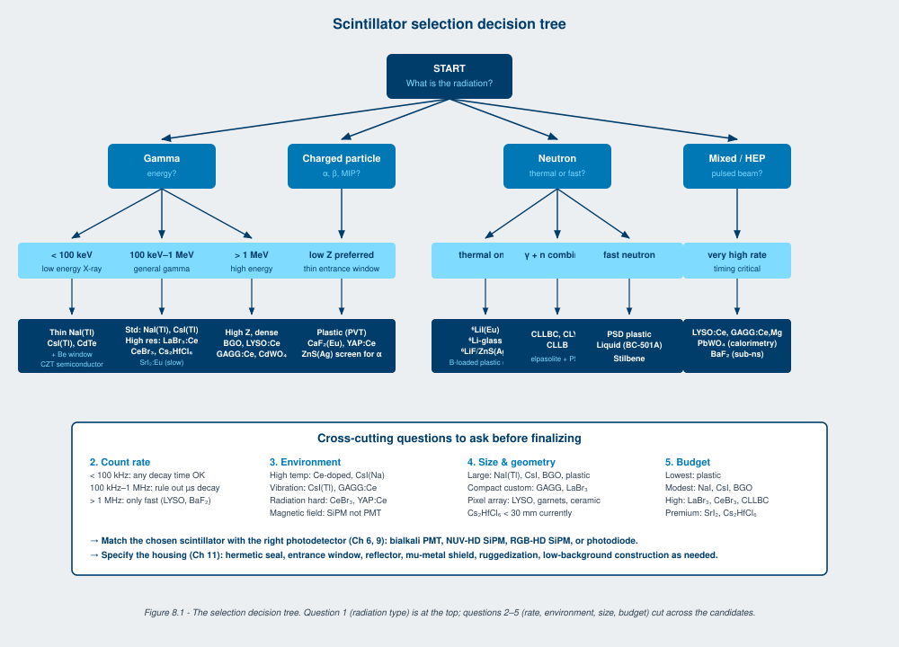
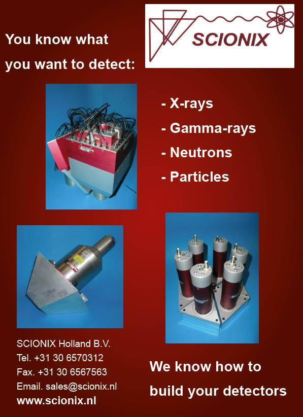

No scintillator has all the desirable properties at once. High light yield trades against decay time. High density trades against energy resolution. Hygroscopic materials offer high yield and need expensive packaging. Non-hygroscopic materials simplify packaging and tend to have either lower yield or longer decay. Picking the right scintillator for an application is the working task of the detector engineer, and it is the most consequential decision in the whole detector design.
This chapter is the decision framework. The materials catalog in Chapter 3 and the photodetector matching in Chapter 6 supply the inputs. This chapter supplies the order in which to ask the questions.
Five questions, in order. The first three eliminate most of the catalog. The last two narrow what remains.
1. What is the radiation, and what is its energy. Gamma below 100 keV, gamma above 100 keV, gamma above 1 MeV, alpha, beta, neutron, mixed, pulsed beam. Each pushes toward different materials. Low-energy X-rays favor thin, low-Z scintillators with thin entrance windows. Mid-energy gamma is the broad NaI(Tl) and CsI(Tl) territory. High-energy gamma favors high-Z dense materials (BGO, LYSO, GAGG:Ce). Charged particles favor low-Z (plastic, CaF2:Eu, YAP:Ce). Neutrons require a converter (6Li, 10B, 157Gd) and may be combined with gamma in a single elpasolite crystal.
2. What is the count rate. Below a few thousand counts per second, decay time barely matters. Above 100 kHz, slow scintillators (NaI(Tl), CsI(Tl), Cs2HfCl6, SrI2:Eu) drop out and the field narrows to materials with sub-100-nanosecond decay. At MHz rates and above, only the fastest materials work: LYSO, GAGG:Ce,Mg, LuAG:Pr, BaF2 fast component, plastic.
3. What is the operating environment. Temperature, vibration, humidity, ambient radiation, vacuum, magnetic field. Down-hole temperature pushes to CsI(Na) or Ce-doped materials. Marine humidity pushes away from hygroscopic. Strong magnetic fields push away from PMT readout. Vacuum pushes away from optical coupling that outgases. High ambient radiation pushes to radiation-hard materials (CeBr3, YAP:Ce, GAGG:Ce).
4. What is the required size and geometry. The scintillator has to be available in the size and shape needed. NaI(Tl) is available in arbitrary sizes up to 400 mm diameter. LaBr3:Ce, CeBr3, and the elpasolites have practical size limits set by crystal growth (typically a few inches at the high end as of 2026). Cs2HfCl6 is currently limited to roughly 30 mm cubes. Custom geometries (wells, slabs, annular shapes) cost more time and money and may not be available in the newer materials. Ask the size question before you fall in love with a material.
5. What is the budget. Cost per gram varies by orders of magnitude across the catalog. Plastic is the cheapest, NaI(Tl) is moderate, CsI(Tl) is moderate, LaBr3:Ce and CeBr3 and CLLBC are expensive, SrI2:Eu and Cs2HfCl6 are expensive at scale, BGO and LYSO are moderate-to-expensive. For a single instrument, budget rarely binds. For a fleet of 1000 portal monitors, budget is the binding constraint and often pushes the design back to plastic.
Figure 8.1 (rendered as a text decision tree) walks the most common path:
START: What is the radiation?
|
+- Gamma only -> What energy?
| |
| +- < 100 keV -> Thin NaI(Tl), CsI(Tl), CdTe, or CZT (semiconductor)
| +- 100 keV-1 MeV -> What count rate?
| | |
| | +- < 100 kHz -> NaI(Tl), CsI(Tl), or for high resolution: LaBr3:Ce, CeBr3, SrI2:Eu, Cs2HfCl6
| | +- > 100 kHz -> LYSO:Ce, GAGG:Ce,Mg, LaBr3:Ce, CeBr3
| +- > 1 MeV -> High Z: BGO, LYSO:Ce, GAGG:Ce, CdWO4
|
+- Charged particles -> Alpha or beta?
| +- Alpha -> ZnS:Ag screen, thin CsI(Tl), thin plastic
| +- Beta -> Plastic, CaF2:Eu, YAP:Ce (low Z, thin window)
| +- MIPs -> Plastic bars, long crystal arrays
|
+- Neutrons -> Thermal or fast?
| +- Thermal only -> 6LiI(Eu), 6Li-glass, 6LiF/ZnS(Ag), or boron-loaded plastic for large area
| +- Combined gamma + n -> CLLBC, CLYC, CLLB
| +- Fast neutron -> PSD plastic, liquid (BC-501A), stilbene
|
+- Mixed / unknown -> Dual-mode (CLLBC) or two separate detectors
|
+- Pulsed beam (HEP) -> LYSO:Ce, GAGG:Ce,Mg, BGO, plastic, or PbWO4 (high rate)The decision tree gets you to a candidate material set in two or three branches. The remaining narrowing comes from the photodetector match (Chapter 6), the size and cost constraints, and any application-specific concerns (low background, radiation hardness, dual-mode operation).
Going Deeper - Multi-criteria decision making with figures of merit
When two materials look comparable on the primary axis, a multi-criteria figure of merit can break the tie. The general form weights each property by its importance to the application:
FOM = sum_i (w_i * P_i / P_i_ref)
where P_i is the candidate material's value for property i, P_i_ref is the reference (often NaI(Tl)) value, and w_i is the application-specific weight. For a homeland-security handheld instrument, weights might be: light yield 0.30, energy resolution 0.30, decay time 0.10, density 0.10, ruggedness 0.20. For a TOF-PET ring, weights would shift dramatically: timing 0.40, density 0.30, light yield 0.15, decay time 0.15. The exercise of explicitly writing down the weights forces a useful conversation with the application stakeholders about what really matters. The numerical answer at the end is less important than the discussion the exercise generates.


Four worked examples, drawn from the most common applications.
Requirements. Field-portable, gamma spectroscopy with isotope identification, energy resolution sufficient to distinguish K-40 from Cs-137 from natural uranium decay products, operates outdoors in -20 to +50 degrees Celsius, battery powered, drop tested.
Decision path. Gamma above 100 keV, low to moderate count rate, harsh outdoor environment, modest size (1.5 inch by 1.5 inch typical). The competitive materials are NaI(Tl) (low cost, modest resolution), LaBr3:Ce (high resolution, La-138 background), CeBr3 (high resolution, no intrinsic background), CLLBC (dual gamma/neutron). The choice depends on cost ceiling and whether neutron detection is in scope. For a moderate-cost gamma-only instrument with high resolution, CeBr3 is the modern default. For dual-mode at higher cost, CLLBC. For a low-cost instrument, NaI(Tl) coupled to a SiPM array.
Decided. CeBr3 1.5 inch by 1.5 inch coupled to a NUV-HD SiPM array, with active temperature compensation in firmware, in a drop-tested housing with USB or Bluetooth readout to a smartphone app.
Requirements. Tool diameter is fixed at 1.75 inches. Operating temperature 25 to 175 degrees Celsius. Operating period in tool 6 to 12 hours per run. Vibration and shock during deployment. Gamma spectroscopy for natural radioactivity (K-40, U, Th decay chains) and for tracer logging. Modest energy resolution acceptable.
Decision path. Gamma in the 30 keV to 3 MeV range. Count rate moderate. Temperature is the binding constraint: NaI(Tl) is marginal above 130 C, CsI(Na) is good to 175 C. Vibration argues for the more rugged CsI(Tl) or CsI(Na) over NaI(Tl). PMT readout has been the historical default; modern tools increasingly use SiPM with active cooling.
Decided. CsI(Na) 1 inch by 4 inches in a sealed housing, coupled to a high-temperature PMT or to a SiPM array with thermoelectric cooling, with the full pulse height spectrum recorded as list-mode data for post-run analysis.
Requirements. Coincidence resolving time below 250 picoseconds. Stopping power for 511 keV annihilation photons in compact crystal volume. Fast decay for high count rate. Mass-produced array of pixels with sub-millimeter pitch.
Decision path. High-Z material is required for 511 keV stopping power. Fast decay rules out NaI(Tl), CsI(Tl), and BGO. The dominant material is LYSO:Ce. GAGG:Ce,Mg is competitive on timing in the latest detector modules. Photodetector must be a fast SiPM or digital silicon photomultiplier.
Decided. LYSO:Ce 4 mm by 4 mm by 20 mm pixels in an 8x8 or 12x12 array, coupled one-to-one to a NUV-HD digital SiPM array with picosecond-accuracy timestamping.
Requirements. Pedestrian or vehicle drive-through, large active area, sensitivity to thermal and fast neutrons from special nuclear material, gamma rejection by pulse shape discrimination, all-weather operation, low cost per unit area for a deployed fleet.
Decision path. Large area at low cost. Plastic scintillator is the only material that scales economically. Boron-loaded plastic for thermal sensitivity, or PSD-capable plastic for fast neutron and gamma-rejection. 6LiF/ZnS(Ag) screens for the highest thermal sensitivity at higher cost. CLLBC for combined gamma-neutron at the highest cost.
Decided. PSD-capable plastic scintillator panels, 1 meter by 2 meters by 5 cm thick, read out by multi-anode PMTs at the panel ends, with digital pulse processors performing real-time PSD and producing alerts on neutron-flagged events.
Three application classes that do not follow the standard decision-tree logic.
Low-background experiments (dark matter, neutrinoless double-beta decay, rare-event searches) push to materials with the lowest intrinsic radioactivity. La-138 in LaBr3:Ce is a problem here; CeBr3 is preferred. Even CeBr3 is too active for the most demanding searches, which use scintillators specifically purified or grown from depleted feedstock. Ultra-low-background CdWO4 has been used in some neutrinoless double-beta decay experiments.
Cryogenic applications (dark matter detection at millikelvin temperatures, ultra-high-resolution X-ray spectroscopy) replace the photodetector with a transition-edge sensor or other thermal-readout device. The scintillator material requirements shift toward materials with high light yield at low temperature, which often means CaWO4 or NaI at cryogenic temperatures. The standard decision tree does not apply.
Calibration and reference standards. When the application is to provide a reference signal at a known energy, the decision is driven by how well the candidate material's calibration is established in the literature, the stability of its response over years of operation, and the availability of reference samples for inter-comparison. NaI(Tl) and CsI(Tl) dominate this niche because of their long history of characterization.
BNC in Practice - Bring two materials to the table, then choose
The discipline that separates an experienced applications engineer from a beginner is bringing two competing candidate materials to the customer conversation, not one. The first proposal might be optimal on paper. The second exists to surface what the customer values that the spec sheet missed: cost, schedule, integration ease, regulatory familiarity, the supply-chain story behind the material. Half the time the customer picks the second one for reasons that did not appear in the original requirements document. The other half they pick the first one with more confidence because the comparison was visible. Either way the conversation is better.
A wrong material choice cannot be fixed downstream. A 1 percent FWHM scintillator paired with a noisy preamplifier delivers 1 percent FWHM. A 7 percent FWHM scintillator paired with a perfect preamplifier still delivers 7 percent FWHM. The scintillator sets the ceiling. Every other element in the chain sets the floor between zero and the ceiling. The selection chapter is short, but the decisions it captures shape every other engineering decision that follows.
Take it interactively. The quiz lives on its own page. Pick one answer per question, then check your score. Auto-scored, and your answers are saved on this device. About 10 minutes.
Or read the questions and answers inline below (preserved for print and offline use).
[1] G. F. Knoll, Radiation Detection and Measurement, 4th ed. Hoboken, NJ: Wiley, 2010.
[2] T. Yanagida, "Inorganic scintillating materials and scintillation detectors," Proc. Jpn. Acad. Ser. B, vol. 94, pp. 75-97, 2018.
[3] M. Kapusta et al., "Properties of CLLBC scintillator: A combined gamma and neutron detector," in Proc. IEEE NSS-MIC 2023, Vancouver, 2023.
[4] S. Vandenberghe et al., "Recent developments in time-of-flight PET," EJNMMI Phys., vol. 7, p. 35, 2020.